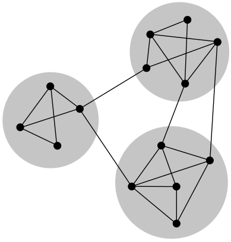
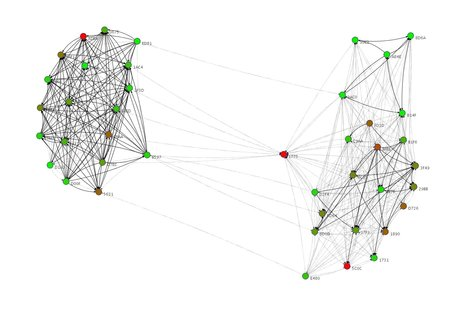
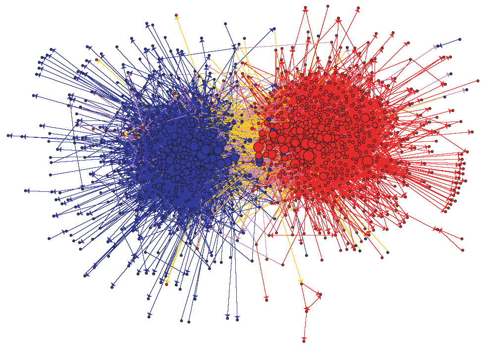
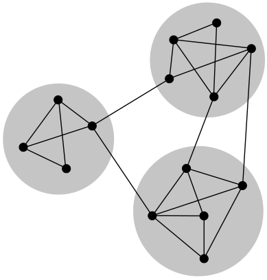
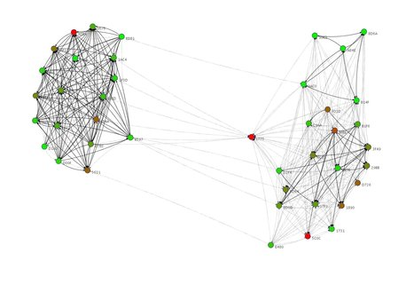
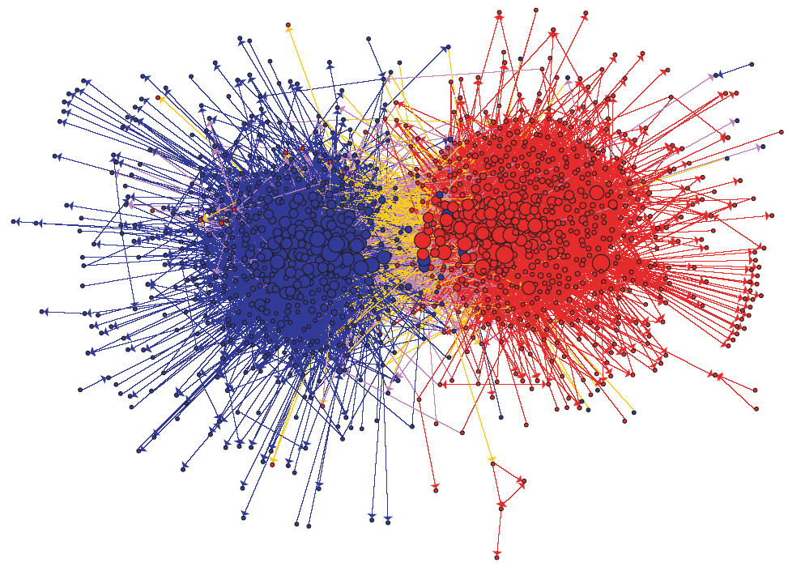
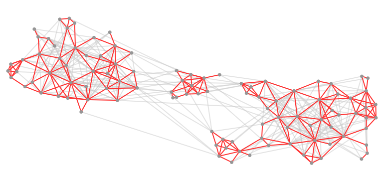
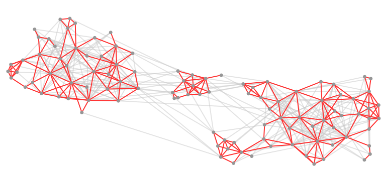

GraphStream to detect community structures in networks
Community structure
We will try to detect community structure in networks.
Intuitively, communities are groups of nodes in a network, where:- There are more links between nodes inside the same community,
- Fewer links between nodes in different communities.

Community structure
Lots of complex networks exhibit community structure, often based on interactions:
- Social networks,
- Biological networks,
- Information networks,
- Road networks
- ...
We will present a method to detect this structure and take care of potential network dynamics.
 





Agenda
In this tutorial we will:
- try to detect communities inside a network using various tools provided by GraphStream
- see how to measure the quality of the community structure.
- see a technique to approximate communities detection, and adapt to the network dynamics.
This is not a published technique, but more a way to show you how to combine the various building blocks of GraphStream to experiment on dynamic networks.
Determining community structure
Most often we use two kinds of criteria:
- Internal validity: some sort of measure indicates the importance of links inside communities compared to links between communities.
- External validity: we rely on an expert, having a knowledge on the network semantics, to validate the communities.
We are focused here in the first one.
Determining communities
Once we have such a measure, several techniques can be used to find the communities:
- Optimizing the minimum cut: often used for load balancing. The number of communities is known by advance. One search to minimize the number of edges between communities (the cut).
- Hierarchical clustering: uses a similarity measure to group node pairs, in communities, then to group communities.
- Girvan-Newman algorithm: in this algorithm, we remove progressively edges that lie between communities, using some kind of measure to identify them.
- Modularity maximization: The modularity is one of the most used measures. This methods employ various techniques (often metaheuristics) to compute network divisions and maximize modularity.
Modularity
One of the most used measure is the modularity \(Q\).
Intuition: \(Q\) measures the fraction of intra-communities edges minus the same fraction if the network had edges at random (with the same communities divisions).
- If \(Q=0\) the edges intra-communities is not better than random.
- If \(Q=1\) we have very strong community structure.
- In practice modular network lie between \(Q=0.3\) and \(Q=0.7\).
Modularity gives results in \(\left[-\frac{1}{2} .. 1\right]\).
Modularity
Suppose a given network with modules:

How to determine its modularity ?
Modularity
We could compare the proportion of internal links \(I_c\) in each community \(c\) to the number of edges \(m\). Links in green \(O_c\) go out of the community \(c\).
However: This would not be sufficient, since putting all nodes in the same community would produce a perfectly modular network !
Modularity
Instead we compare the ratio \(\frac{I_c}{m}\) with the expected value in the same network but with all its links randomly rewired, that is:

Which yield for the modularity \(Q\):
\[Q = \sum_c\frac{I_c}{m} - \sum_c\frac{(2 I_c + O_c)^2}{(2m)^2}\]Network dynamics?
Computing the modularity can take some time.
But in addition computing the communities themselves is often very time consuming and is the most demanding task.
If the network under analysis evolves, it becomes impossible to recompute the whole modules each time a change occurs in the graph.
Graph layouts
A novel approach to determine the modules uses graph layouts.
A layout is a mapping of nodes of the network in a space such that nodes are assigned positions according to a given criteria, often an aesthetic one.
A large fraction of the layout algorithms are force based: they apply some repulsive force among all nodes and attractive force between connected nodes.
 

The Lin-Log layout
The Lin-Log layout does not try to produce aesthetic layouts but tries to position nodes so that:
- densely connected nodes are grouped by placing them at nearby positions,
- weakly connected nodes are separated by placing them at distant positions.
Most force based algorithms uses the evaluation of the energy where force equilibrium correspond to energy minimization.
It is based on a \((a,r)\)-energy model where \(a\) is the attraction force factor and \(r\) the repulsion force factor of the energy model, the \(a\) and \(r\) factors for the force algorithm are derived from it.
The Lin-Log layout and network dynamics
The interesting part in layouts to detect communities is: each time a change occurs in the graph, the layout restart its computation from its previous equilibrium state. There are lots of chances for the new equilibrium to be close to the previous one.
Indeed, a process that uses a layout to compute communities could them adapt more easily to network dynamics.
The Lin-Log layout was proposed by Andreas Noak.
Practical session
We will see how to:
- read, layout and display a graph automatically.
- control the layout directly and change it to a Lin-Log layout.
- retrieve feedback from the distant view process.
- compute communities from the Lin-Log layout and display them.
- retrieve the communities.
- compute the modularity of these communities.
How GraphStream handles display
GraphStream puts the display of the graph in a separate thread or process.
Usually your display will evolve in parallel with the computations you are running on your graph.


Graph
Network
Viewer
How GraphStream handles graph layouts
The viewer is able to create by itself a third thread or process that will handle the layout of the graph.
By default this layout tries to provide a aesthetically pleasing display of the graph:
- putting densely connected nodes in the center of the layout,
- and ensuring the edge lengths are as uniform as possible.
This default algorithm is a derivative of the Frutcherman-Reingold one.
Frutcherman-Reingold
Lin-Log
Step 1
Open the tutorial4 package, then the
LinLogLayout.java file. You will see this code:
public class LinLogLayout {
// ...
private Graph graph;
private Viewer viewer;
public void findCommunities(String fileName)
throws IOException, GraphParseException {
graph = new SingleGraph("communities");
viewer = graph.display(true);
graph.read(fileName);
}
}
It creates a graph, displays, launches an automatic layout on it (the
display(true) argument) and then reads it.
Before proceeding
Before proceeding, to avoid compilation problems copy and paste the following imports to your programi, just under the already present imports:
import org.graphstream.algorithm.ConnectedComponents; import org.graphstream.algorithm.measure.Modularity; import org.graphstream.graph.Edge; import org.graphstream.stream.ProxyPipe; import org.graphstream.ui.graphicGraph.GraphPosLengthUtils; import org.graphstream.ui.graphicGraph.stylesheet.StyleConstants.Units; import org.graphstream.ui.layout.springbox.implementations.LinLog; import org.graphstream.ui.spriteManager.Sprite; import org.graphstream.ui.spriteManager.SpriteManager;
We will need them in the following.
Step 2
We will now:
- Stop the automatic layout.
- Create our own
LinLoglayout. - Configure it using some \((a, r)\) parameters.
- Connect the layout graph events output to the graph so that the graph nodes receive position attributes.
- Connect the graph to the layout so that the layout receive each modification event on the graph.
- Run the layout in a loop.
Step 2
public class LinLogLayout {
// ...
private LinLog layout;
private double a = 0;
private double r = -1.3;
private double force = 3;
public void findCommunities(String fileName) throws ... {
graph = new SingleGraph("communities");
viewer = graph.display(false); // 1
layout = new LinLog(false); // 2
layout.configure(a, r, true, force); // 3
layout.addSink(graph); // 4
graph.addSink(layout); // 5
graph.read(fileName);
while(true) { // 5
layout.compute();
}
}
}
Run this example to see the new Lin-Log layout and compare it to the old version.
Step 3
As said before the viewer runs in its own thread or process. Therefore interactions you make with it are not directly reflected on the graph structure you use.
Try grabbing a node with the mouse and move it.
We will:
- Create a back link from the viewer to our program to receive its interactions.
- Connect this link to our graph so that it is modified by the viewer events.
- Consult these events regularly to update the graph from the user interactions.
- Check if the user closed the viewer window to properly end the program.
Step 3
public class LinLogLayout {
// ...
private ProxyPipe fromViewer;
public void findCommunities(String fileName) throws ... {
graph = new SingleGraph("communities");
viewer = graph.display(false);
fromViewer = viewer.newThreadProxyOnGraphicGraph(); // 1
layout = new LinLog(false);
layout.configure(a, r, true, force);
layout.addSink(graph);
graph.addSink(layout);
fromViewer.addSink(graph); // 2
graph.read(fileName);
while(! graph.hasAttribute("ui.viewClosed")) { // 4
fromViewer.pump(); // 3
layout.compute();
}
}
}
Now try to grab a node in the display.
Finding community structure with a Lin-Log layout
At the contrary of the Frutcherman-Reingold layout, Lin-Log creates some very long edges between nodes in distinct communities and short edges between nodes in the same communities.
- We can use this property to obtain a quick (and hopefully good enough) approximation of the communities.
- The technique relies on cutting the edges that are longer than the global average edge length.
- We can then move the cut above or under this average to improve the communities.
Step 4
We will:
- Add a style sheet on the graph to tell the viewer how to better display the graph.
- Beautify the display a little by adding some anti-aliasing.
- Prepare for detection of communities using the layout.
- Specify a cut threshold (a factor for the average edge length).
Step 4
public class LinLogLayout {
// ...
private double cutThreshold = 1; // 4
public void findCommunities(String fileName) throws ... {
// ...
graph.addAttribute("ui.antialias"); // 2
graph.addAttribute("ui.stylesheet", styleSheet); // 1
graph.read(fileName);
while(! graph.hasAttribute("ui.viewClosed")) {
fromViewer.pump();
layout.compute();
showCommunities(); // 3
}
}
public void showCommunities() { // 3
// ...
}
protected static String styleSheet = // 1
"node { size: 7px; fill-color: rgb(150,150,150); }" +
"edge { fill-color: rgb(255,50,50); size: 2px; }" +
"edge.cut { fill-color: rgba(200,200,200,128); }";
}
Step 4 a
In the style sheet, we specify that each edge will be red, excepted
edges with the ui.class set to the value
"cut" that will be grey.
It remains to provide the code to detect the communities, in the showCommunities()
method. We will do it in two sub-steps. First we will:
- Browse each edge of the graph
- Store each edge length in an array of real values.
- Doing this we will compute the average edge length.
Step 4 a
public void showCommunities() {
int nEdges = graph.getEdgeCount();
double averageDist = 0;
double edgesDist[] = new double[nEdges];
for(int i=0; i<nEdges; i++) { // 1
Edge edge = graph.getEdge(i);
edgesDist[i] = GraphPosLengthUtils.edgeLength(edge); // 2
averageDist += edgesDist[i]; // 3
}
averageDist /= nEdges; // 3
// ...
}
Step 4 b
Now we will select which edge is inter-community, mark it an show it in the viewer. We will:
- Browse anew each edge in the same order.
- Compare their length stored in the array of lengths with the average length.
- If they are longer, mark them with a "
cut" attribute and a "cut"ui.class. - Else, remove the "
cut" attribute andui.class.
- If they are longer, mark them with a "
Step 4 b
public void showCommunities() {
// ...
averageDist /= nEdges;
for(int i=0; i<nEdges; i++) { // 1
Edge edge = graph.getEdge(i);
if(edgesDist[i] > averageDist * cutThreshold) { // 2
edge.addAttribute("ui.class", "cut"); // 2a
edge.addAttribute("cut");
} else {
edge.removeAttribute("ui.class"); // 2b
edge.removeAttribute("cut");
}
}
}
Run the program to see the communities.
The Zachary Karate Club
The graph we use as a demo comes from a well known social study in a Karate Club.
Nodes represent members and edges their friendship ties.
At a given time one of the member left the club to create its own club. Some members stayed in the old one, while others quit to join the new one.
This graph usually admits at least two communities (the two clubs), although smaller sub-communities can be observed.
Computing the number of communities
We will now compute the number of communities.
GraphStream contains a dynamic algorithm that allows to compute and update the number of connected components of a graph.
This algorithm can consider some edges as inexistent if they have a specific
attribute, say here "cut".
In addition, we will use sprites in the viewer to have a visual indication of the number of communities.
Step 5 a
We will anew proceed in two sub-steps:
first compute the number of connected components
- Add a connected component algorithm.
- Initialize it on the graph.
- Setup a cut attribute so that the algorithm ignore the long edges.
Step 5 a
// ... private ConnectedComponents cc; // 1 public void findCommunities(String fileName) throws ... { graph = new SingleGraph("communities"); viewer = graph.display(false); fromViewer = viewer.newThreadProxyOnGraphicGraph(); layout = new LinLog(false); cc = new ConnectedComponents(graph); // 2 layout.configure(a, r, true, force); cc.setCutAttribute("cut"); // 3 // ... while(! graph.hasAttribute("ui.viewClosed")) { fromViewer.pump(); layout.compute(); showCommunities(); } }
Step 5 b
Then we display this number of connected components using a sprite:
- Create a sprite that will indicate the connected component count.
- Position this sprite.
- Update it regularly with the number of components.
- Update the style sheet to display the sprite correctly.
Step 5 b
// ... private SpriteManager sm; private Sprite ccCount; public void findCommunities(String fileName) throws ... { // ... cc = new ConnectedComponents(graph); sm = new SpriteManager(graph); // 1 ccCount = sm.addSprite("CC"); // 1 // ... cc.setCutAttribute("cut"); ccCount.setPosition(Units.PX, 20, 20, 0); // 2 // ... while(! graph.hasAttribute("ui.viewClosed")) { //... showCommunities(); ccCount.setAttribute("ui.label", // 3 String.format("Modules %d", cc.getConnectedComponentsCount())); } } // ... protected static String styleSheet = // 4 "node { size: 7px; fill-color: rgb(150,150,150); }" + "edge { fill-color: rgb(255,50,50); size: 2px; }" + "edge.cut { fill-color: rgba(200,200,200,128); }" + "sprite#CC { size: 0px; text-color: rgb(150,100,100); text-size: 20; }";
Computing the modularity
Now that the communities are well identified we can measure the quality of the partition.
GraphStream provides a modularity algorithm that, like the connected components algorithm, try to follow each update on the graph.
However the modularity algorithm needs that each node contain an attribute indicating its community.
Fortunately, the connected components algorithm can identify each component.
Step 6 a
We will:
- Add the modularity algorithm.
- Create it so that it uses the attribute "
module" on nodes to identify communities. - Initialise it on the graph.
- Request that the connected components algorithm identify components/communities
with the attribute "
module".
Step 6 a
// ... private Modularity modularity; // 1 public void findCommunities(String fileName) throws ... { cc = new ConnectedComponents(graph); sm = new SpriteManager(graph); ccCount = sm.addSprite("CC"); modularity = new Modularity("module"); // 2 modularity.init(graph); // 3 layout.configure(a, r, true, force); cc.setCutAttribute("cut"); ccCount.setPosition(Units.PX, 20, 20, 0); cc.setCountAttribute("module"); // 4 // ... }
Step 6 b
We will:
- Add a sprite for the modularity.
- Position it.
- Update it regularly with the modularity value.
- Update the style sheet for this other sprite.
Step 6 b
// ... private Sprite ccCount, modValue; // 1 public void findCommunities(String fileName) throws ... { // ... modularity = new Modularity("module"); modValue = sm.addSprite("M"); // 1 // ... cc.setCutAttribute("cut"); ccCount.setPosition(Units.PX, 20, 20, 0); cc.setCountAttribute("module"); modValue.setPosition(Units.PX, 20, 40, 0); // 2 // ... while(! graph.hasAttribute("ui.viewClosed")) { //... ccCount.setAttribute("ui.label", String.format("Modules %d", cc.getConnectedComponentsCount())); modValue.setAttribute("ui.label", // 3 String.format("Modularity %f", modularity.getMeasure())); } } protected static String styleSheet = // ... // 4 "sprite#CC { size: 0px; text-color: rgb(150,100,100); text-size: 20; }" + "sprite#M { size: 0px; text-color: rgb(100,150,100); text-size: 20; }";
That's it
That is all for this tutorial.
Some other graphs are provided in the data directory of
the eclipse project.
You can experiment on them, and play with the
cutThreshold parameter as well as the \((a, r)\) and
force parameters. Here is a set of good values for these
graphs:
| Graph | a | r | force | cutThreshold | expected modularity |
|---|---|---|---|---|---|
| karate.gml | 0 | -1.3 | 3 | 1 | 0.43 to 0.52 |
| dolphins.gml | 0 | -1.2 | 8 | 0.8 | 0.44 to 0.52 |
| polbooks.gml | 0 | -1.9 | 5 | 0.8 | 0.43 to 0.51 |